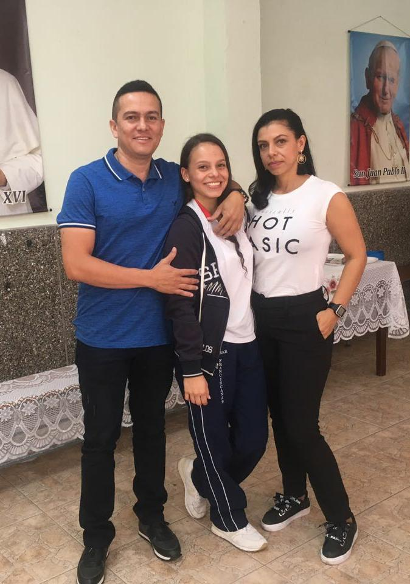

Bill Gates como todos sabemos es el fundador de Microsoft la compañía que dominó el mundo de los sistemas operativos de todo el mundo en los inicios de la informática personal.
Steve Jobs seguramente sea una de las figuras más representativas de la revolución informática ya que tomó aquello obtuso
cuadrado y aburrido del mundo informático y lo hizo bonito, delicado y flexible.Steve Jobs es el co-fundador de Apple y una figura casi
religiosa para aquellos que han sabido entender su mente innovadora y creativa.

Larry Page y Sergey Brin son los fundadores del mamut informático llamado Google. Seguramente sea la empresa de internet más grande, usada e importante del momento, algo que seguramente no cambiará por lo menos por un tiempo.
A mi corta edad no puedo completar esta sección con mucha información, pero si tengo muchos sueños y objetivos por delante que son lo que hoy me inspiran a luchar y seguirme esforzando a pesar de lo duro que a veces se pueda tornar el camino.
El logro más reciente que tal vez poseo, es el de Bachiller Académico, es un largo camino en el que se experimentan grandes cambios, se cosechan momentos que quedarán guardados para siempre en nuestro corazones y amistades inolvidables. Recuerdo el colegio como un lugar donde se hacia un esfuerzo de manera grupal a diferencia que en la universidad cada persona lucha por sí mismo y se esfuerza según lo que quiere lograr en un futuro.
Mis padres sin duda son mi motor diario, son los que me inspiran y me dan los recursos necesarios para llevar a cabo mis metas. Lo que más me gusta, es que son dos personas que nunca me han impuesto un pensamiento o no me han obligado a elegir una carrera en específica, sencillamente siempre me han dejado ser y por el contrario siempre me han impulsado para conseguir todo lo que deseo. Son mis polo a tierra, los que me llenan de buenos consejos cuando a veces quiero desistir y los que me animan en todo momento, por que un padre jamás deja solo a su hijo...
El próximo objetivo que quiero incluir en mi hoja de vida es el título de INGENIERA, es algo que de solo pensarlo me causa mucha emoción e ilusión, es por lo que estoy trabajando en estos momentos y tengo grandes expectativas frente a esto.
No sé si será incorrecto tener pensado durante gran parte de mi vida, si Dios lo permite, seguir estudiando y formándome como profesional, pues para mi el estudio es el mejor regalo que uno puede tener y después de los años es lo único que permanece. El conocimiento es oro y tiene mucho más valor que lo material.